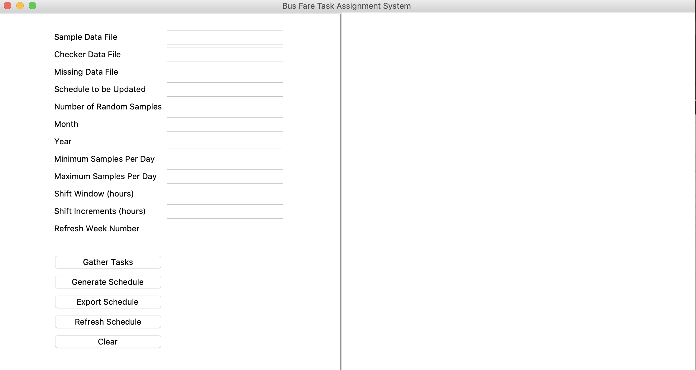

Quick Start¶
The BFE Task Assignment System consists of a set of source codes and a simple GUI. In this section we will briefly introduce the content of the source files and provide a quick start tutorial for using the GUI.
Source Code Files¶
bfehelper.py : Utility Functions
bfeclasses.py : All Classes
shortestpath.py : Graph-based Functions
onoff.py : On/Off Schedule Generating Functions
genetic.py : Genetic Algorithm
main.py : Main file that can be modified for command line execution and testing
Graphic User Interface¶
To start the GUI, run the file gui.py.
{kind=link}
Filenames should be a path to the corresponding file. Note that all data files are assumed to be .csv files.
Available functionalities:
Task Gathering: Collects information on all valids tasks for all checkers. Only needs to be run once per dataset used.
Generate Schedule: After task gathering is complete, a schedule can be generated.
Export Schedule: Exports the most recent generated schedule to sample.xls spreadsheet
Clear: Clears all information
Features to be included:
Importing previous schedules for rescheduling
Rescheduling based on input data (currently implemented to be done randomly for demo purposes)